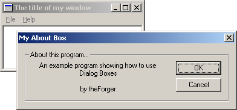

Example: dlg_one
 There's hardly a windows program out there that doesn't use dialog boxes. Just go File -> Open in any text editor or any other kind of editor for that matter and voila, you are presented with a dialog box, one that probably allows you to select a file to be opened.Dialogs aren't limited to the standard open file ones, they can look like and do whatever you choose. The attractive point of dialogs is that they provide a quick way to arrange and create a GUI (Graphic User Interface) and even some default processing, cutting down on the amount of code you must write.
One thing to remember is that dialogs are just windows. The difference between a dialog and a "normal" window is that the system does some additional default processing for dialogs, such as creating and initialising controls, and handling tab order. Nearly all APIs that are applicable to "normal" windows will work just as well on dialogs, and vice versa!
The first step is to create the dialog resource. As with any resource how you do this will depend on your compiler/IDE. Here I will show you the plain text of the dilaog in the .rc file and let you incorporate it into your project.
IDD_ABOUT DIALOG DISCARDABLE 0, 0, 239, 66
STYLE DS_MODALFRAME | WS_POPUP | WS_CAPTION | WS_SYSMENU
CAPTION "My About Box"
FONT 8, "MS Sans Serif"
BEGIN
DEFPUSHBUTTON "&OK",IDOK,174,18,50,14
PUSHBUTTON "&Cancel",IDCANCEL,174,35,50,14
GROUPBOX "About this program...",IDC_STATIC,7,7,225,52
CTEXT "An example program showing how to use Dialog Boxes\r\n\r\nby theForger",
IDC_STATIC,16,18,144,33
END
On this first line, IDD_ABOUTDLG is the id
of the resource. DIALOG is the resource type, and the four number are the Left,
Top, Width and Height co-ordinates. These ARE NOT PIXELS, they are in Dialog
Units, which are based on the size of the font used by the system (and chosen by the user).
If you have a large font selected, the dialog will be large, if you use a smaller font, the
dialog will be that much smaller. This is important as it makes sure that all of the controls
are the proper size to display their text in the current font. You can convert dialog units
to pixels at runtime using MapDialogRect(). DISCARDABLE tells the
system it may swap the resource memory to disk when it's not being used in order to
conserve system resources (essentially pointless).
The second line starts with STYLE and follows with the window styles that will
be used to create the dialog. These should be explained under CreateWindow()
in your help files. In order to use the predefined constants you may need to add
#include "windows.h" to your .rc file, or in the case of VC++, winres.h or afxres.h
will do. If you use the resource editor these files will certainly be included automatically
if needed.
The CAPTION line should be self explanitory.
The FONT line specifies the size and name of the font you wish to use for
this dialog box. This might not end up exactly the same on each computer
as different people will have different fonts and may have specified different
font sizes. You usually don't need to worry about that though.
Now we have the list of controls to create on the dialog
DEFPUSHBUTTON "&OK",IDOK,174,18,50,14
Here's the line for the OK button. The & in this case like with menus underlines the
next letter "O", so that by pressing Alt+O the user can activate this control
(part of the default processing I mentioned).
IDOK is the control identifier. IDOK is pre-defined so we don't need to
#define it ourselves. The four numbers at the end are the left, top, width
and height, all in dialog units.
This information should be purely academic, as you almost always use a resource editor to create dialogs, but knowing how to do it from text is sometimes necessary, expecially if you have no visual editor.
Two of the controls have an ID of IDC_STATIC (which is -1),
this is used to indicate we never need to access them, so they have no
need of an identifier. However it doesn't hurt to give them an ID and your
resource editor might do so automatically.
The "\r\n" in the text of the static control is a CR-LF pair, the way windows
represents a new line.
So! Having added that to your .rc file we need to write a Dialog Procedure to process message for this box. Don't worry this is nothing new, it's practicly the same as our main Window Procedure (but not exactly).
BOOL CALLBACK AboutDlgProc(HWND hwnd, UINT Message, WPARAM wParam, LPARAM lParam)
{
switch(Message)
{
case WM_INITDIALOG:
return TRUE;
case WM_COMMAND:
switch(LOWORD(wParam))
{
case IDOK:
EndDialog(hwnd, IDOK);
break;
case IDCANCEL:
EndDialog(hwnd, IDCANCEL);
break;
}
break;
default:
return FALSE;
}
return TRUE;
}
There are a few important differences between a dialog procedure and window
procedure. One is that you DO NOT call DefWindowProc() for message you don't
handle. With dialogs this is done automatically for you (and will really screw things up
if you do it).
Secondly, in general you return FALSE for messages you don't process, and TRUE for
messages you do process, UNLESS the message specifies you return something
else. Note that this is what we do above, the default is to do nothing and return FALSE,
while messages we do handle break the switch() and return TRUE.
Thirdy, You do not call DestroyWindow() to close a dialog, you call
EndDialog(). The second paramter is the value that is returned
to whatever code called DialogBox().
Finally, instead of handling WM_CREATE, you handle WM_INITDIALOG to do any
processing that needs to be done before the dialog appears, and then return
TRUE to have the keyboard focus set to the default control. (You can actually handle WM_CREATE
as well, but it is sent BEFORE any of the controls have been created, so you can't access them. In
WM_INITDIALOG the controls have already been created).
Enough chit-chat, lets create it....
case WM_COMMAND:
switch(LOWORD(wParam))
{
case ID_HELP_ABOUT:
{
int ret = DialogBox(GetModuleHandle(NULL),
MAKEINTRESOURCE(IDD_ABOUT), hwnd, AboutDlgProc);
if(ret == IDOK){
MessageBox(hwnd, "Dialog exited with IDOK.", "Notice",
MB_OK | MB_ICONINFORMATION);
}
else if(ret == IDCANCEL){
MessageBox(hwnd, "Dialog exited with IDCANCEL.", "Notice",
MB_OK | MB_ICONINFORMATION);
}
else if(ret == -1){
MessageBox(hwnd, "Dialog failed!", "Error",
MB_OK | MB_ICONINFORMATION);
}
}
break;
// Other menu commands...
}
break;
This is the code I used to create my about box, you can probably guess that
this is to be merged into your WM_COMMAND handler, if you aren't clear on
this aspect, you might want to review the section on menus. ID_HELP_ABOUT
is the identifier of my Help -> About menu item.
Since we want the menu on our main window to create the dialog, we obviously want to
put this code in the WndProc() of our main window, not the dialog proc.
Now I stored the return value from the call to DialogBox(), this is just so
you can observe the effects of pressing the two buttons, hitting Esc, Enter
etc... from inside the dialog. It also illustrates how to use the return value
from a dialog box to check for success, failure, a users choice, or whatever
other information you choose to send back to the caller from the Dialog Procedure.
DialogBox(GetModuleHandle(NULL), MAKEINTRESOURCE(IDD_ABOUT), hwnd, AboutDlgProc);This is the only important part, and you can choose to put it wherever in your code that you want the dialog to come up.
IDD_ABOUT is the id of the dialog
resource. hwnd is the handle to the parent window of the dialog.
AboutDlgProc() is of course the dialog procedure to use to control the dialog.
That's it! Sit IDD_UBU, sit.
A perticularly astute reader might eventually wonder, if DialogBox() doesn't
return untill the dialog closes we can't process messages while it's up, so how does it
work? Well the nifty thing about DialogBox() is that it has it's own message
loop, so while the dialog is displayed, our message loop is out of the picture and the
default loop is handled by windows. This loop also takes care of fun things like moving
the keyboard focus from control to control when you press Tab.
Another effect of using DialogBox is that your main window is disabled untill the dialog is dismissed. Sometimes this is what we want, and sometimes it isn't, such as when we want to use a dialog as a floating toolbar. In this case we want to be able to interact with both out dialog and our main window, and this will be the focus of the next section.